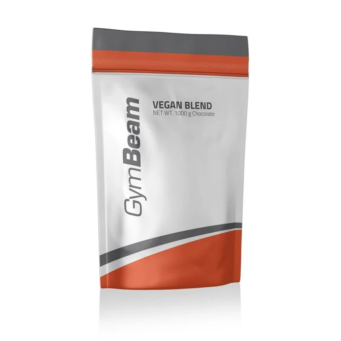

Feherje
Anabolikus Fehérje

A True Whey egy tejsavófehérje-koncentrátum (WPC), amely az egyik legnépszerűbb fehérje. Magas fehérjetartalmával hozzájárul az izomtömeg növekedéséhez és fenntartásához. Ezen túlmenően kiemelkedik gyors felszívódásával, könnyű emészthetőségével és azzal, hogy természetesen gazdag esszenciális aminosavakban (EAA), beleértve a BCAA-kat is. Ennek eredményeként nagyszerű forrása a kiváló minőségű fehérjéknek, amelyet edzés után vagy a bármely más napszakban is lehet fogyasztani.
3499 Ft
Mars Fehérje

A Formel 90 Protein egy többkomponensű fehérje, ami 4-féle, szójából, tejből és tojásból származó fehérje egyedülálló keverékét tartalmazza. Kiváló minőségű fehérjeforrás, ami hozzájárul az izomtömeg növeléséhez és védelméhez. Emellett B6-vitamint tartalmaz, ami segít csökkenteni a fáradtságot és a kimerültséget. Remek választás edzés után, de a nap bármely szakában fogyasztható.
12995 Ft
Mutáns Fehérje

A Mutant Whey egy prémium minőségű fehérje, amely 4 fehérjetípus kiegyensúlyozott keverékét tartalmazza a maximális hatékonyság érdekében. A tejsavófehérje koncentrátum, foszfolipid koncentrátum, izolátum és hidrolizátum kombinációját tartalmazza. Magas fehérjetartalommal rendelkezik, ami támogatja az izomnövekedést és -fenntartást, valamint a csontok egészségét. Szabadon élő, fűvel táplált (grass fed) tehenek tejéből készül, és ízletes.
11999 Ft
Vega Fehérje
A szójafehérje izolátum az egyik legnépszerűbb növényi alapú fehérjepor. Aminosavspektruma leginkább a tejsavófehérje-poréhoz hasonlít, ezért különösen népszerű a vegánok körében. Ezért nem csak a növényi alapú étrenden élő sportolók élvezhetik az izomtömeg növekedését és fenntartását segítő tulajdonságait. Remekül ízlik fehérjeturmixban, desszertekben és más édes ételekben.s
6000 Ft
Szecsuáni Fehérje

A Rizsfehérje a növényi alapú fehérjeporok közé tartozik, és alacsony cukortartalmával tűnik ki. Ez egy rizshidrolizátum, amely ízesítéstől függően akár 79%-os fehérjetartalommal is büszkélkedhet. Ennek köszönhetően segíthet hatékonyan fedezni ennek a makrotápanyagnak a bevitelét. Ez a fehérjepor remek ízű, ha edzés utáni fehérjeturmixként fogyasztjuk, vagy hozzáadhatjuk zabkásákhoz, smoothie-khoz, desszertekhez és egyéb ételekhez, így könnyedén növelhetjük azok fehérjetartalmát.
6299 Ft
Mutáns Gép

Az Animal Flex azok számára készült, akik megfelelően szeretnék ápolni az ízületeket és a teljes mozgásszervi rendszert. A termék alapja 3 hatóanyagból áll, konkrétan glükózaminból, kondroitin-szulfátból és MSM-ből. Ezeket növényi kivonatok, valamint válogatott vitaminok és ásványi anyagok egészítik ki. Az aktív emberek, a hivatásos sportolók és az idősebbek, akik számára fontos a mozgásszervi rendszer egészsége, mindannyian élvezhetik az ízületi táplálékkiegészítők előnyeit.